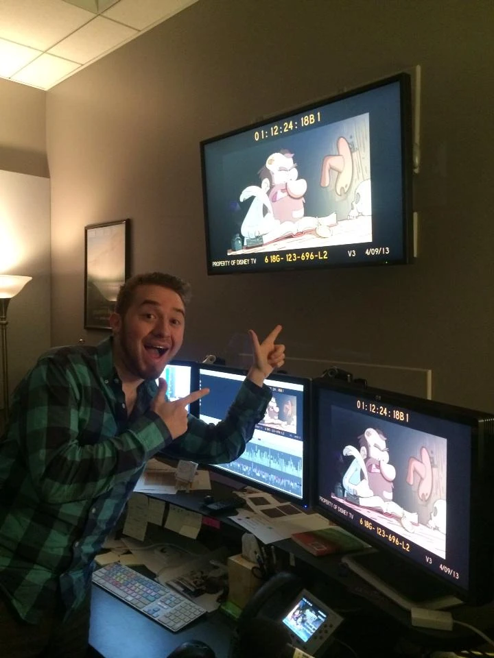
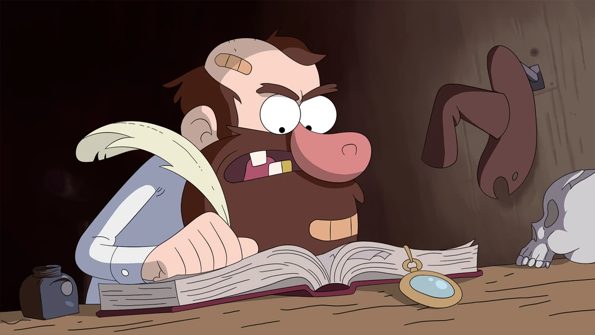
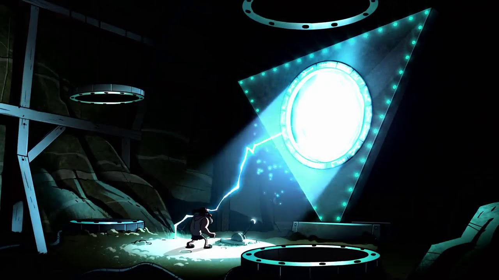
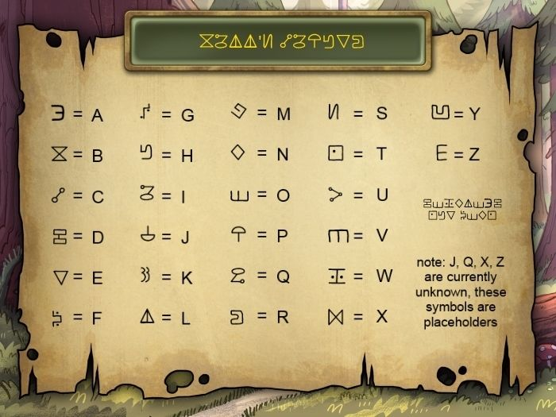
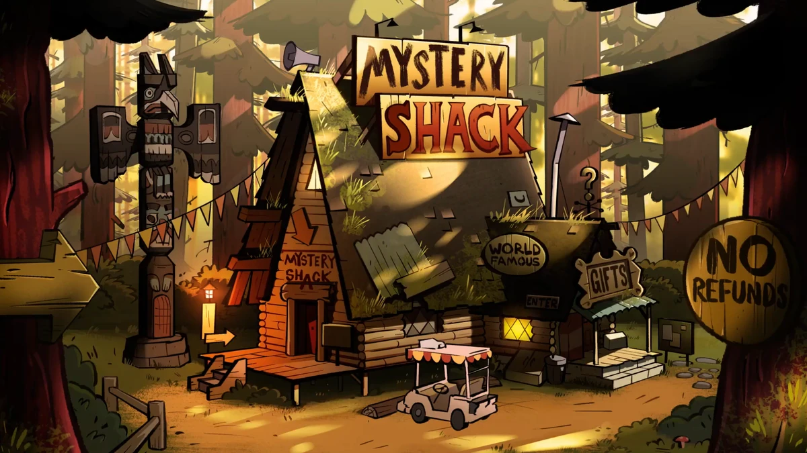
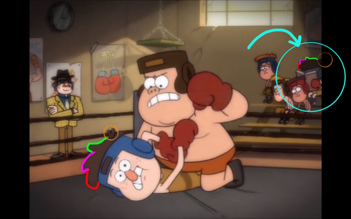
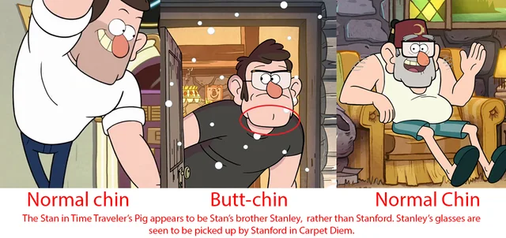
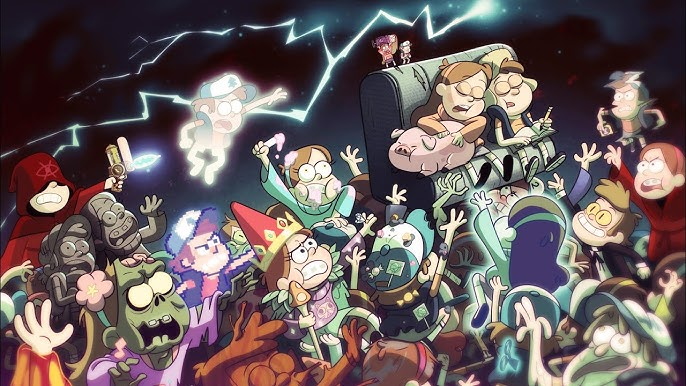

Gravity Falls está lleno de acertijos, códigos y mensajes secretos. Los fanáticos han propuesto muchas
teorías, desde la verdadera identidad del autor de los diarios hasta conexiones con otros universos.
Misterios
La identidad del autor de los tres diarios fuero uno de los misterios que mas intriga daba a los
fanaticos de Gravity Falls. Muchos creian en un
principio que era el tío Stan. Otros pensaban que era el viejo McGucket. Para colmo, Alex Hirsch
alimentó aun mas esta ultima teoria cuando mostró una imagen de él mismo junto con un supuesto fotograma
del
autor, cuyo diseño era muy similar a McGucket.


Desde su primera aparicion, Bill Cipher causo gran conmocion en los televidentes por su poder,
personalidad
y su particular diseño, muy similar a una pirámide o al ojo iluminati que todo lo ve.
 El Portal tambien genero todo tipo de teorias entre los fans. Al final del primer episodio, el tio Stan
entre en un sotano secreto que tiene escondido en la maquina de bebidas de la cabaña. Pero al final de
la primera temporada, se nos revela que estaba arreglando un enorme portal con ayuda de los tres
diarios. Automaticamente se desechó la teoria de que el era el autor, pero causo aun mas preguntas entre
los seguidores
El Portal tambien genero todo tipo de teorias entre los fans. Al final del primer episodio, el tio Stan
entre en un sotano secreto que tiene escondido en la maquina de bebidas de la cabaña. Pero al final de
la primera temporada, se nos revela que estaba arreglando un enorme portal con ayuda de los tres
diarios. Automaticamente se desechó la teoria de que el era el autor, pero causo aun mas preguntas entre
los seguidores

Acertijos
Códigos y Cifras: Cada episodio contiene mensajes ocultos en forma de códigos cifrados
en los creditos
finales, como el
cifrado César, el cifrado
Atbash y el cifrado A1Z26. Los fans pueden descifrarlos para obtener pistas adicionales sobre la trama.

El Tapiz de Bill Cipher: En varios episodios, se pueden ver imágenes y símbolos que
hacen referencia a
Bill Cipher y sus planes. Generalmente, muestra a Bill en el centro, rodeado de símbolos que representan
a diferentes personajes y elementos importantes de la serie
 La Cabaña del Misterio: la casa del tio Stan está llena de objetos y habitaciones
secretas que contienen
pistas sobre los eventos de la serie. El mas famoso es el sotano, donde se encuentra el portal
multidimensional. Tambien podemos nombrar el letrero de la cabaña que a menudo cambia de forma
humorística en diferentes episodios, el tótem que también tiene varios símbolos y
referencias a los misterios de la serie, o las exhibiciones que organiza el propio Stan para atraer
turistas con figuras falsas como “Hombre Lobo de Cera”, "La roca que parece una cara"y el “Pie Grande
Disecado”.
La Cabaña del Misterio: la casa del tio Stan está llena de objetos y habitaciones
secretas que contienen
pistas sobre los eventos de la serie. El mas famoso es el sotano, donde se encuentra el portal
multidimensional. Tambien podemos nombrar el letrero de la cabaña que a menudo cambia de forma
humorística en diferentes episodios, el tótem que también tiene varios símbolos y
referencias a los misterios de la serie, o las exhibiciones que organiza el propio Stan para atraer
turistas con figuras falsas como “Hombre Lobo de Cera”, "La roca que parece una cara"y el “Pie Grande
Disecado”.

Teorías
La Conexión entre Stan y Stanford: Antes de que se revelara que Stan tenía un hermano
gemelo, los fans
ya
especulaban sobre la verdadera identidad del autor de los diarios y la relación entre los dos
personajes.


Bill Cipher y el autor: Los fans han desarrollado varias teorías sobre Bill y su
posible relacion con la
desaparicion del autor de los diarios.
 El Futuro de Dipper y Mabel: Muchas teorías giran en torno a lo que les depara el
futuro a los gemelos
Pines después de los eventos de la serie. En "El Libro de Bill", se nos revela que la razon por la que
los padres de Dipper y Mabel mandaron a sus hijos con el Tio Stan fue porque estaban en pleno proceso de
divorcio o querian tomarse un tiempo para estar solos y ver si la relacion podia recuperarse. Eso
explicaria algunos aspectos de las personalidades de los chicos, como que Dipper se obsesione con los
misterios (quiza para despejar su cabeza de los problemas familiares) o que Mabel sea tan dependiente
emocionalmente.
El Futuro de Dipper y Mabel: Muchas teorías giran en torno a lo que les depara el
futuro a los gemelos
Pines después de los eventos de la serie. En "El Libro de Bill", se nos revela que la razon por la que
los padres de Dipper y Mabel mandaron a sus hijos con el Tio Stan fue porque estaban en pleno proceso de
divorcio o querian tomarse un tiempo para estar solos y ver si la relacion podia recuperarse. Eso
explicaria algunos aspectos de las personalidades de los chicos, como que Dipper se obsesione con los
misterios (quiza para despejar su cabeza de los problemas familiares) o que Mabel sea tan dependiente
emocionalmente.
Tambien se ha especulado con que haya una nueva serie que continue con la historia de Gravity Falls. En
una entrevista exclusiva con la publicación estadounidense The Direct, la vicepresidenta ejecutiva de
animación televisiva y televisión de marca Disney, Meredith Roberts, reveló que los fanáticos nunca
deberían decir nunca, puesto que han tenido conversaciones con Alex Hirsch sobre un
posible regreso de Gravity Falls. Esto no es una garantía de que los fanáticos vayan a poder ver una
continuacion pero... nada es lo que parece, al igual que el mundo de Gravity Falls.

Si tu tambien deseas compartir tus teorias y conclusiones sobre Gravity Falls, puedes enviarnos un mail
al siguiente formulario: